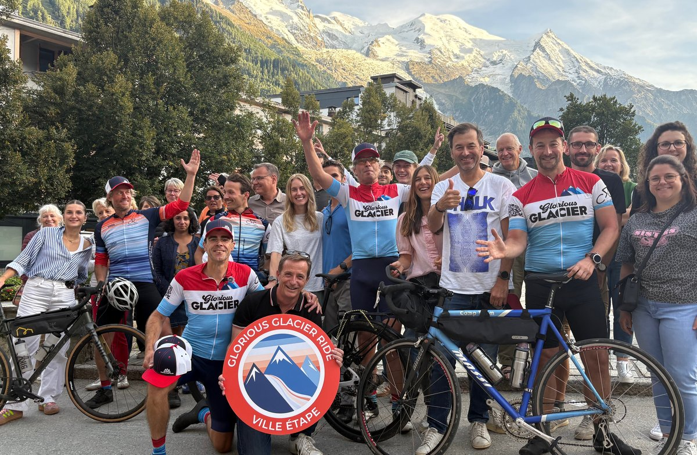
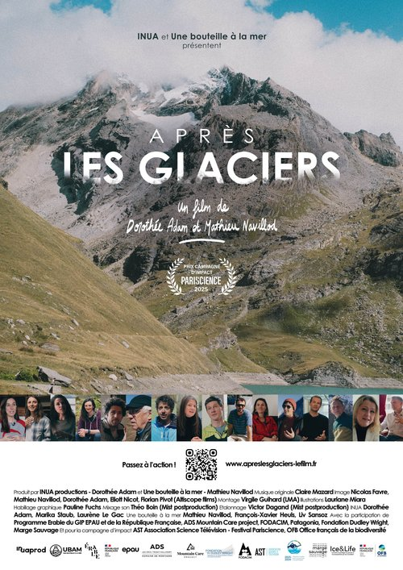
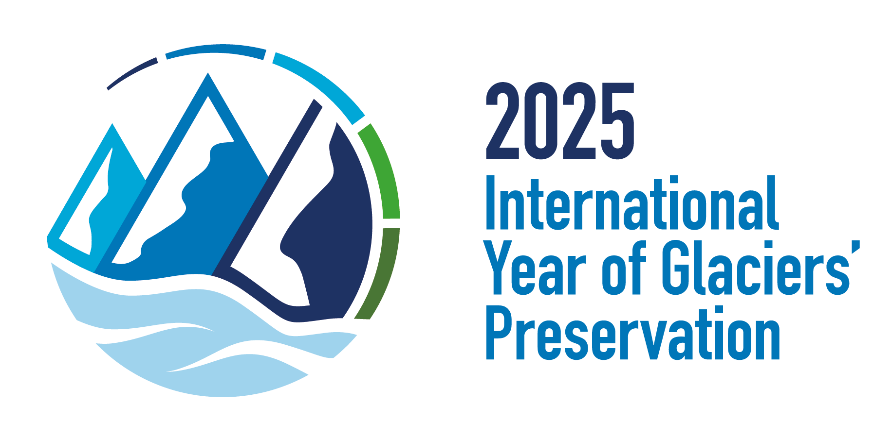
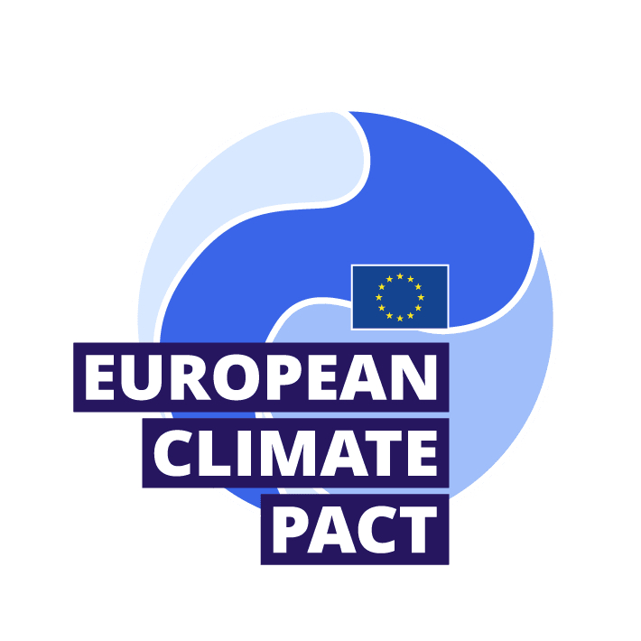

Ride to the Edge of a Vanishing World
Chamonix, 4 September 2026
The Journey Ends Here — Be Part of It
For one week, a peloton of climate riders will push through 740 km of Alpine terrain — witnessing glaciers in retreat, communities adapting, and a planet crying out for action. On Friday 4 September, that journey ends in Chamonix. And you can be there for the finish.
Ride With Us — Join the Chamonix Climate Ride
This is your moment. Local riders from the Chamonix region: come out, clip in, and ride the final kilometres alongside a peloton that has crossed the Alps for a reason. Together, you'll make the finish unforgettable — and send a powerful message that climate action starts here, in the shadow of a shrinking glacier.
At 12:30, you roll out from the Centre des Congrès Le Majestic. The route takes you to the Buvette du Glacier du Trient — face to face with what's left of the Trient Glacier — where you'll meet the peloton that has ridden all the way from Innsbruck. What you see there will stay with you. Then it's back together over the Swiss-French border, up the Col des Montets — with a stop at the Col des Montets chalet to discover the mountain ecosystem — before the descent into Chamonix, where you'll be welcomed by the crowd on Place du Triangle de l'Amitié.
The concept route can be viewed here.

Finish of the Glorious Glacier Ride 2025, Chamonix. Photo: Baptiste Savignac
Get Equipped — Choose a Morning Workshop
From 9:00 to 12:00, choose between two hands-on morning workshops at Le Majestic. The Climate Fresk, led by European Climate Pact ambassador Joachim Hoffmann, doesn't just explain climate change — it transforms how you see it, and what you believe you can do about it. Over 2.5 million people have taken part worldwide and rated it 9/10. Or join "Become a Glacier Ambassador" with Marge Sauvage and glaciologist Jean-Baptiste Bosson, and dive into the science behind the ice you're about to ride past.
Both workshops are free, but space is limited to 20 people each — registration required.
Programme
| Location | Centre des Congrès Le Majestic, 241 Allée du Majestic, 74400 Chamonix-Mont-Blanc |
| 9:00 - 12:00 | Climate Fresk workshop, with Joachim Hoffmann (European Climate Pact ambassador) — free, registration required (20 spots) |
| 9:00 - 12:00 | "Become a Glacier Ambassador" workshop, with Marge Sauvage and glaciologist Jean-Baptiste Bosson — free, registration required (20 spots) |
| 12:30 | Departure of the Chamonix Climate Ride |
| 14:00 - 15:00 | Table talk: "Being an Athlete Facing Climate Disruption" — with Hillary Gerardi, Zoe Hart and Vivian Bruchez, moderated by Louisa Moreau (Protect Our Winters) |
| 14:00 - 17:00 | Outdoor textile repair workshop — free, drop in anytime |
| 15:30 - 16:30 | Table talk: "Making Climate Science Accessible to All" — with Florian Fiquet, glaciologist Jean-Baptiste Bosson and Daniel Rodrigues (Compagnie des Guides de Chamonix) |
| 17:00 | Peloton arrives with music, Place du Triangle de l'Amitié |
| 17:30 - 20:00 | Closing speeches, cocktail & DJ set |
| 21:00 | Film screening: Après les Glaciers, Cinéma le VOX Chamonix (€5 entry, no reservation) — Q&A with directors Dorothée Adam & Mathieu Navillod and glaciologist Jean-Baptiste Bosson |

"Après les Glaciers" — a film by Dorothée Adam & Mathieu Navillod. More info: apreslesglaciers-lefilm.fr
Ready to Ride for What Matters?
A small participation fee of €15 goes directly towards supporting the ride and the climate projects behind it. Every euro counts.
🚴 Chamonix Climate Ride:
Join & RideRegister for the Workshops & Talks at Le Majestic
also for friends & family
See you in Chamonix. Let's ride for the glaciers.

To highlight the importance of glaciers, the United Nations has designated 2025 as the International Year of Glaciers' Preservation.

The Glorious Glacier Ride is an initiative of Cycling 4 Climate. A not for profit but for impact foundation from The Netherlands. C4C aims to become the biggest sustainable cycling movement in Europe and organizes rides in 11 regions throughout the continent. It is fully run by volunteers and is an official partner of the EU Climate Pact.
Supported by

Initiative portée par la Commission européenne, le Pacte européen pour le Climat donne l’occasion aux citoyens et citoyennes, aux communautés et aux organisations de participer à l’action pour le climat dans toute l’Europe en s'informant sur le changement climatique, en élaborant et en mettant en œuvre des solutions et devenant un espace dynamique pour partager des informations, débattre et agir face à la crise climatique.